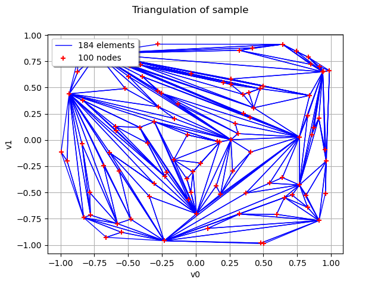

Note
Go to the end to download the full example code.
Cloud meshing¶
import openturns as ot
import openturns.viewer as otv
import otmeshing
mesher = otmeshing.CloudMesher()
points = ot.JointDistribution([ot.Uniform()] * 2).getSample(100)
triangulation = mesher.build(points)
graph = triangulation.draw()
graph.setLegendPosition("upper left")
graph.setTitle("Triangulation of sample")
view = otv.View(graph)
otv.View.ShowAll()